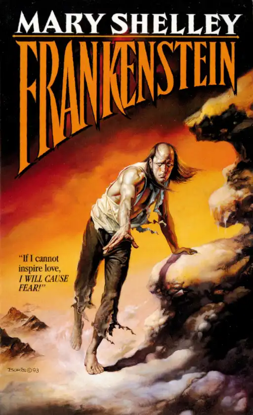
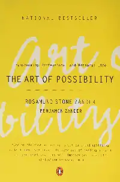

I went to Panama in january with my family! The trip involved lots of snorkeling, swimming, and great food. We also saw the canal, of course.
My favorite restaurant is Masu Sushi because the sushi is simply incredible. I really like their culinary creativity and quality of their fish!
I really like any sushi that has tuna or salmon in it.
I prefer tuna, but generally any sushi will do.
| Name | Cover | Author | Summary |
|---|---|---|---|
| Frankenstein |  | Mary Shelley | Frankenstein traverses the philosophical topics of life, love, and purpose, when a science fiction experiement reanimates a disfigured creature. |
| Picture of Dorian Gray | Oscar Wilde | A portrait painting of Dorian Gray collects the marks of Dorian's sins and age, while Dorian's own appearance does not. | |
| The Art of Possibility |  | Rosamund Stone Zander, Benjamin Zander | A non-fiction book with strategies on navigating the world through a lens of possibility. |
| The Autobiography of Benjamin Franklin | Benjamin Franklin | The unfinished autobiography of Ben Franklin, written by Franklin's in his final years as he reflected on his youth and early days in Philadelphia. |